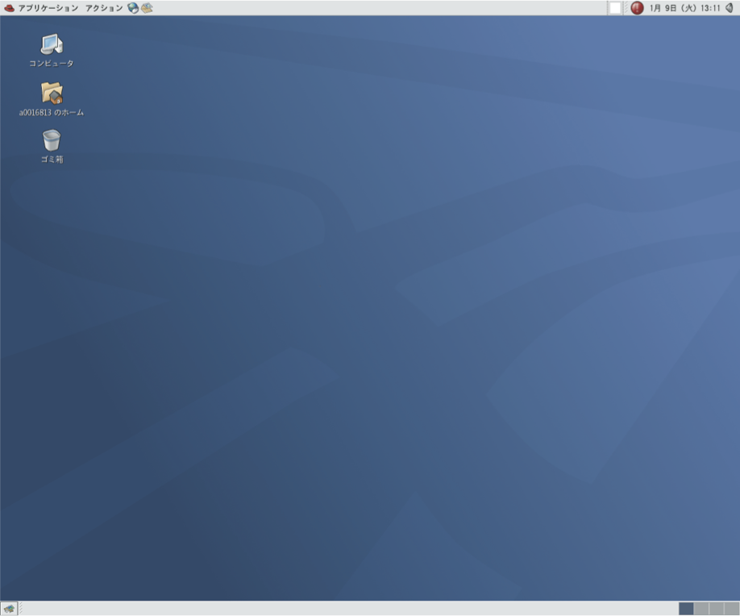

ここではUNIXシステムにログインし、簡単な命令 (date, cal) を実行した後にログアウトするまでの様子を示します。わからない用語や操作が出てきた時は、後ろの解説を参考にしてください。
情報環境機構教育用コンピュータシステムの端末PC（パーソナルコンピュータ（パソコン））では、仮想OS(Vine Linux 6)を用いてセンターのUNIXシステムにログインして利用することができます。
これで、UNIXシステムが利用できる状態になりました。 画面上ではX window と呼ばれるウィンドウシステムが動いていて、 これを利用することになります。
ログイン後の初期画面
X window の操作詳細については次章に述べますが、ここではごく基本的な操作に ついて述べます。
1.マウスを動かしてみて下さい 画面の中で動いている印をポインタと呼びます。 マウスには、ボタンが２つとホイール（ダイヤル）が１つついています。 これを用いて、ウィンドウの操作やメニューの選択を行います。 ボタンの間のホイールはボタンとして操作することができ，以後これを ３つめの「中央ボタン」として使用します．
2. ポインタを上部にあるバーに移動させ、「アプリケーション」を選択します。 ポインタを「システムツール」に移動させると図ref{fig:rootmenu}のようなメニューが現れます。 マウスをドラッグして、「端末」を選択します。ウィンドウが開きます。 ポインタは画面の背景(バックグラウンド：ルートウィンドウ)にいくと``矢印”になり、 ウィンドウの中にあると ``I” になります。
####図#### 「アプリケーション」のメニュー
####図#### GNOME端末
3.アクティブなウィンドウ footnote{ 現在文字の入力の受付を行なっているウィンドウ } は、今開けたウィンドウですが、 始めに開いていたウィンドウを左ボタンでクリックして、 アクティブにして下さい。
4.またアクティブウィンドウを元に戻して下さい。
5.端末エミュレータ用のウィンドウの終了は、 コマンドモードから「exit」命令を入力する あるいは ウィンドウ右上隅の’‘×’‘ボタンを左クリックすると ウィンドウは閉じられます。
ウィンドウ(GNOME端末)で 簡単なUNIXのコマンドを実行してみましょう。 コマンドを入力した後 Return キーをタイプします。 date コマンドは今日の日付、時刻を表示します。 UNIX では大文字、小文字が区別されます。:
[a0032246@vine6 ~]$ date
2012年 4月 2日 月曜日 10:10:10 JST
[a0032246@vine6 ~]$ DATE
DATE: コマンドが見つかりません．
[a0032246@vine6 ~]$
cal は カレンダーを表示します。 皆さんの誕生した日は、 何曜日だったか調べてみて下さい。:
[a0032246@vine6 ~]$ cal
4月 2012
日 月 火 水 木 金 土
1 2 3 4 5 6 7
8 9 10 11 12 13 14
15 16 17 18 19 20 21
22 23 24 25 26 27 28
29 30
[a0032246@vine6 ~]$
日付を指定することができます。:
[a0032246@vine6 ~]$ cal 8 1984
8月 1984
日 月 火 水 木 金 土
1 2 3 4
5 6 7 8 9 10 11
12 13 14 15 16 17 18
19 20 21 22 23 24 25
26 27 28 29 30 31
[a0032246@vine6 ~]$
label{sec:logout2}
1. ポインタを上部にあるバーに移動させ、「システム」を選択します。 「システム」のメニューは図1.5のような内容になっています。
####図#### 「システム」のメニュー
2.この状態でマウスの左ボタンを押しながらマウスを下へ動かして メニューの「シャットダウン」を選択します。
3.今のウィンドウ画面が消えて、しばらくすると、Vine Linux 6が終了しWindows画面に戻ります。
情報環境機構の各演習室には、数十台のクライアントと呼ばれる端末ＰＣが設置されています。 クライアントで作業をしようとすれば、管理サーバが運転されている必要があります。
*管理サーバ： ソフトの保存、ファイルシステムの提供などの管理の仕事をする。 *クライアント：利用者が実際に使うマシン。
教育用コンピュータシステムの管理サーバは24時間運転されるのであまり気にする必要はありません。 このような計算機の構成をとる事により、利用者はどの端 末PCからでも自分の作成したファイルを利用できます。
クライアントの電源は正面の 四角形 の押しボタンスイッチです。これは電源を入れる時 だけに用います。スイッチのそばには電源ランプがあり、電源が入っていない場合は 橙色に、入っている時は緑色に点灯します。したがって、電源ランプが緑色に点灯し ている時は、原則として電源スイッチに触らないように注意して下さい。
この演習書で Control とか Ctrl と説 明しているキーは、コントロール です。Return と説明して いるキーは、 parbox[c]{0.6cm}{scalebox{1.1}{includegraphics{./EPS/return.eps}}}です。 Tab と説明しているキーは、 parbox[c]{0.6cm}{scalebox{1.1}{includegraphics{./EPS/tab.eps}}}です。 Escape とか Esc と説明しているキーは、 エスケープ です。
各クライアントにはホスト名という名前が付けられています。 クライアントは学内ネットワークによって結びつけられており、 各マシンに異なるホスト名を登録することで管理サーバとクライアント、 あるいはクライアント間の適切な通信を可能にしています。 学内ネットワークは外部のネットワークと接続されており、 適当な手続きによりクライアントと外部との通信も可能となります．
label{sec:unix}
UNIXはオペレーティングシステム(OS)の一つです。パソコンのWindows もOSの一つで す。OSの仕事は、たとえば、ファイルやディレクトリの管理やプログラムの起動など、 計算機を利用する時に、必ず必要となる一連の作業を行なう基本的なソフトウェアで す。
UNIXにはさまざまな種類のものがあり、 システムの管理や、入出力装置の制御の関係に 特色があるようです。 しかし、普通にアプリケーションプログラムを利用する場合には、 あまりそれらの相違を気にする必要はないといえます。 したがって、ある一つのUNIXに慣れれば、 他のUNIXも簡単に利用できます。
UNIXの特徴は、
*ファイルシステム: ファイルとディレクトリの概念。 基本的には3.3.1節の図ref{fig:file-system}に示すように木構造である。
*マルチタスク: 同時に複数のプロセス footnote{ プロセスとは、プログラムを実行する時に、 メモリ上に読み込まれて、CPUが実行できる状態になったデータを指します。 したがって、一つのプログラムで複数のプロセスが存在することがあります。 } が実行できます。 例えば、計算をさせながら論文を作成することができます。
*マルチユーザ: １台の計算機を同時に複数のユーザで利用することができます。 ファイルやプロセスには持ち主を明確にして管理をしています。
*アプリケーション: フリーソフト(無料で配布されるソフトウェア）が多い **X-Window System **Editor(vi, Emacs) **DTP(LaTeX, Gnuplot, tgif, idraw...) **プログラミング(c , c++ , gfortran, g95, .....)
アプリケーション開発、科学技術計算、.....
UNIXに関する最近の大きな変化として、パソコン上で動作するUNIXの普及が挙げられます。 これは主に、1991年にヘルシンキ大学の大学院生Linus Torvalds氏が開発した UNIX互換 OSの Linux に拠る所が大きく、 Linux とこれに関連するソフトウェア群をまとめたパッケージが 現在では多数配布・販売されています。
パソコン上で動作するUNIXを個人利用する場合、マルチユーザの機能を意識する機会 は少なく、演習でもこの点を考慮する場面は特にありませんが、１つの計算機を多数 のユーザで共用する場合、この機能は大変有効です。マルチユーザ機能の一つの効果 として、利用時のユーザ認証によるファイル管理などの安全性確保が挙げられます。 Windows でも最近のものはユーザ認証の機能を持ちますが、ネットワークなどを介し て複数のユーザが１つの計算機を同時に利用できる点で、マルチユーザはユーザ認証 よりも上位の機能であることに注意して下さい。
UNIXはマルチユーザOSですので、 マシンを使い始めるときは、 使う人が誰なのか、 使う権利を持っている人なのかどうかを 確認して、セキュリティーを保つ必要があります。
そのために、 各人がアカウント名（ユーザネーム：IDネーム） をもらい、 パスワード（その本人しか知らない情報） を登録するのです。
教育用コンピュータシステムでは現在、WWWにより ネットワーク経由でのパスワード変更が可能となっています。
センターの該当するページ （2012年3月現在のURL = texttt{https://ecs.iimc.kyoto-u.ac.jp/}） から手続きを行う事が出来ます．
C- は コントロール キーを表す。 従って、C-q は コントロール を押しながら q を押すことを示す。
(UNIXでは C-s で画面表示が停止する。 C-q でこれが解除される。)
英数 をタイプして緑色のランプを点灯する。
(コマンドの強制終了などで画面に対する設定が異常になった)。
(キーボードの入力を読み取るコマンドが実行されている。 C-c はコマンドを強制終了させる命令)
プロンプトが表示されない。
C-c を押してみる。
(コマンドが暴走した[終了しない]ため、 C-c でコマンドを強制終了させる)
clear : 端末装置の画面の消去
各々のコマンドの詳しい説明は、 マニュアルコマンド man で参照して下さい。
{kind=link}